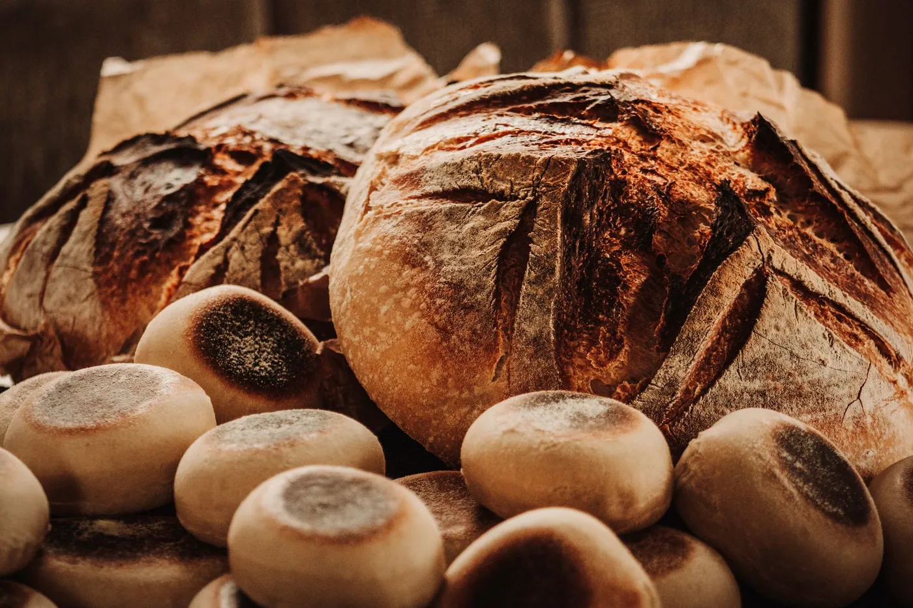

In the Kitchen
A pot of soup for nobody in particular
On cooking when no one is coming over, and why the empty table deserves a good meal too.
This week's letter
Some mornings ask nothing of you but attention. A bowl of dough, a warm window, and the patience to let time do the work it was always going to do.
Read the essay
In the Kitchen
On cooking when no one is coming over, and why the empty table deserves a good meal too.
The Home
How one small decision about light reshaped the way I move through an ordinary day.
Slow Living
I gave up the fastest route to work. What I found on the long way around surprised me.
Seasons
Late-summer jam, sticky counters, and the small grief of a season ending well.
The Home
Notes on living somewhere long enough that the floorboards begin to know you back.
In the Kitchen
In praise of the meals so simple we forget to call them cooking at all.
Slow Living
The first time I made bread on purpose — not from a box, not in a hurry — I stood over the bowl as if it might try to leave. I had read that the dough needed an hour to rise, and I had decided to watch the whole hour happen, the way you might watch a kettle you have been told never boils.
Nothing visible happened for a long time. The kitchen was warm and smelled faintly of yeast and flour, and the light moved a little across the counter the way it does in early summer. I checked my phone. I put it down. I checked it again. And somewhere in that small impatient loop, I noticed that I was the only thing in the room in any sort of rush.
The dough was not waiting for me. It was simply becoming what it already was, at the only speed it knew.
This is, I think, the lesson that slow living keeps trying to teach me and that I keep mishearing. It is not about doing less for its own sake, or romanticizing a tidy pantry, or pretending the dishes wash themselves. It is about noticing the difference between the things that hurry because we hurry them, and the things that have a pace of their own and ask only that we keep them company.
By the time the dough had doubled, the afternoon had quietly rearranged itself around the task. I had answered no emails. I had, instead, watched something rise.